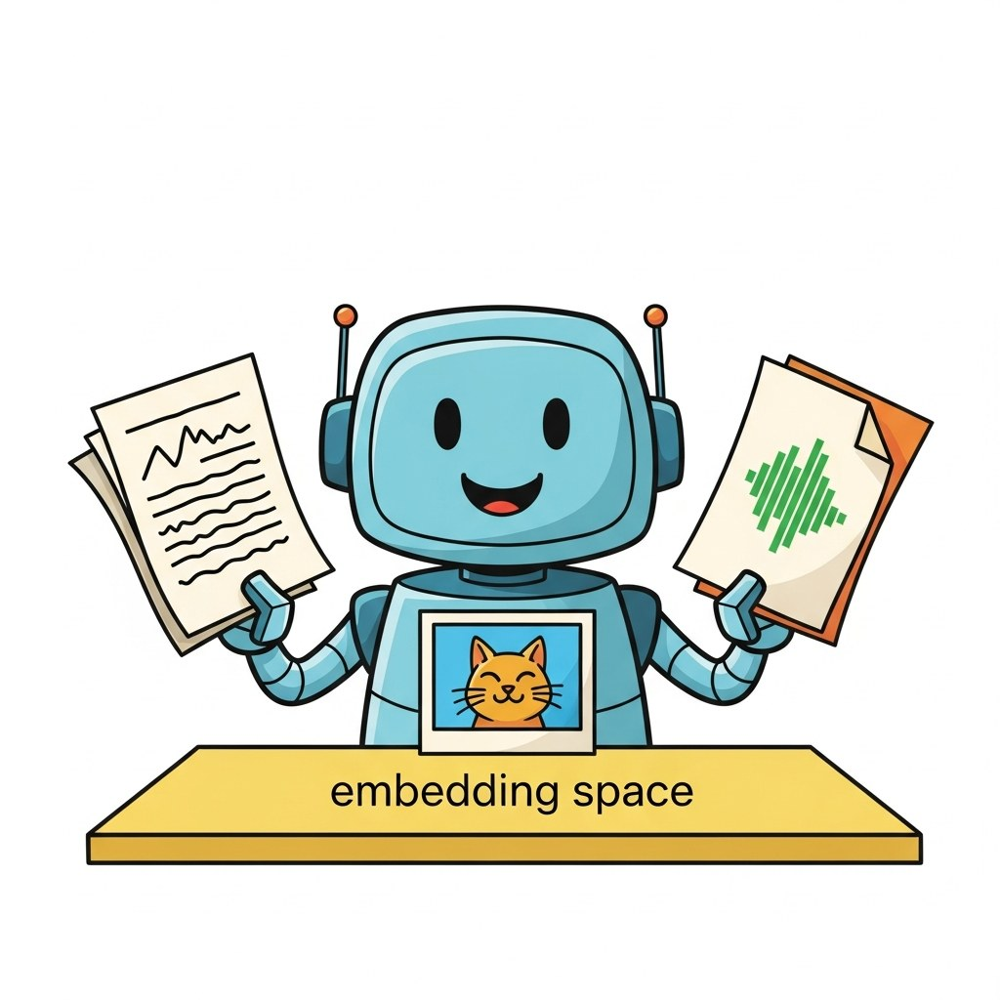

"When the corpus contains charts as well as paragraphs, your retriever must read pictures."
RAG, Cross-Modal-Curious AI Agent
Chapter 32 was text-only RAG. This chapter crosses modalities: image+text retrieval, multimodal embeddings, document-aware retrieval, and the production patterns that let you ground an answer in a PDF, a chart, or a video frame.
Joint embedding spaces, multimodal retrieval, when to retrieve vs reason, and production multimodal reasoning.
Chapter Overview
Your retriever returns a paragraph; your user wanted the chart. That gap is the entire reason cross-modal RAG exists. When the corpus is a stack of PDFs with figures, a folder of meeting recordings, or a video library, text-only embeddings throw away most of what the user actually needs to see. This chapter teaches the joint-embedding architectures (CLIP-style retrieval, ImageBind, late fusion) that index images, audio, and video together, the multimodal RAG patterns that ship to production, the rubric for deciding when to retrieve versus when to drop the whole document into a long-context VLM, and the cost-latency-quality matrix that drives model selection.
Multimodal RAG is where retrieval engineering meets multimodal models. By the end of this chapter you will know how to architect a cross-modal retrieval system, when to skip retrieval entirely, and how to budget cost and latency across the pipeline.
- Explain CLIP-style joint embedding spaces and ImageBind's six-modality alignment.
- Architect a multimodal RAG system that retrieves images, audio, or video as context.
- Apply a decision rubric for when to retrieve versus when to reason directly from a VLM.
- Evaluate a multimodal RAG pipeline on cost, latency, and answer quality.
- Select the right multimodal model and retrieval backend for a given production constraint.
Prerequisites
- Text RAG from Chapter 32
- Vision-language models from Chapter 22
- Document understanding from Chapter 21
Sections
- 33.1 Joint Embedding Spaces for Multimodal Retrieval CLIP-style retrieval, ImageBind, late fusion. Entry
- 33.2 Multimodal RAG: Image, Audio, Video Retrieval-Augmented Generation Image, audio, and video retrieval-augmented generation patterns. Intermediate
- 33.3 When to Retrieve, When to Reason Decision rubric and hybrid strategies for multimodal RAG vs direct reasoning. Advanced
- 33.4 Multimodal Reasoning in Production Cost, latency, quality matrix and model selection. Advanced
What's Next?
This chapter begins with Section 33.1: Joint Embedding Spaces for Multimodal Retrieval. Each section builds on the previous one, so we recommend reading them in order.